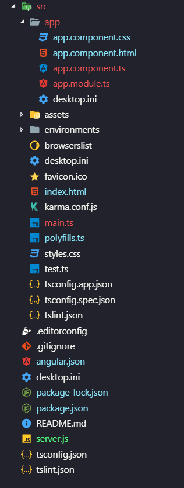
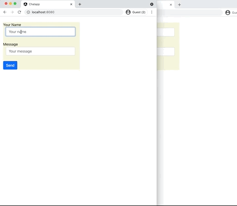

npm install socket.io
npm install express
var app = require('express')();
var server = require('http').Server(app);
Line 2: Socket.io is attached to an instance of http.Server and adds handlers to it.
let io = require("socket.io")(server);
io.on("connection", function(socket) {
console.log("new connection made");
}
socket.on("eventName", function(data){
console.log("got data ");
}
socket.on("event1", function(data){
console.log("got data from event 1 ");
}
socket.on("event2", function(data){
console.log("got data from event 2 ");
}
io.sockets.emit("anotherEventName", data);
socket.emit("justAnotherEvent", data);
So, the server side in one piece
let express = require("express");
let path = require("path");
let app = express();
let server = require("http").Server(app);
let io = require("socket.io")(server);
let port = 8080;
app.use("/", express.static(path.join(__dirname, "dist/chatApp")));
io.on("connection", socket => {
console.log("new connection made from client with ID="+socket.id);
socket.on("newMsg", data => {
io.sockets.emit("msg", { msg: data, timeStamp: getCurrentDate() });
});
});
server.listen(port, () => {
console.log("Listening on port " + port);
});
function getCurrentDate() {
let d = new Date();
return d.toLocaleString();
}
ng new chatapp
npm install socket.io-client npm install @types/socket.io-client
import { io } from 'socket.io-client';
let socket: any;
this.socket = io();
this.socket.on("eventName", theMsg => {});
this.socket.emit("justAnotherEventName", this.messageText);
import { Component } from "@angular/core";
import { io } from 'socket.io-client';
@Component({
selector: "app-root",
templateUrl: "./app.component.html",
styleUrls: ["./app.component.css"],
})
export class AppComponent {
messageText: string;
messages: Array<any> = [];
socket:any;
constructor() {
this.socket = io();
}
ngOnInit() {
this.messages = new Array();
this.listen2Events();
}
listen2Events() {
this.socket.on("msg", data => {
this.messages.push(data);
});
}
sendMessage() {
this.socket.emit("newMsg", this.messageText);
this.messageText = "";
}
}
<div id="chatContainer">
<div class="chatform">
<div class="form-group">
<label for="userName">Your Name</label>
<input type="text" class="form-control" id="userName" placeholder="Your name" [(ngModel)]="userName">
</div>
<div class="form-group">
<label for="message">Message</label>
<input type="text" class="form-control" id="message" placeholder="Your message" [(ngModel)]="messageText">
</div>
<button (click)="sendMessage()" type="submit" class="btn btn-primary">Send </button>
</div>
<div class="container" *ngFor="let item of messages.slice().reverse() ">
<p>From: {{item.userName}}</p>
<div>
<h3>{{item.msg}}</h3>
</div>
<span class="time-right">{{item.timeStamp}}</span>
</div>
</div>
html,
body {
height: 100%;
}
#chatContainer {
height: 80vh !important;
overflow-y: auto;
padding-left: 2vw;
padding-top: 2vh;
}
.chatform input{
margin-bottom: 2vh;
margin-left: 1vh;
width: 90%;
}
.chatform{
background-color:beige;
width: 50%;
}
.container {
border: 2px solid #dedede;
background-color: #f1f1f1;
border-radius: 5px;
padding: 10px;
margin: 10px 0;
}
.container::after {
content: "";
clear: both;
display: table;
}
.time-right {
float: right;
color: #aaa;
}
The final project structure:

ng build
node server.jsAnd here is the expected output: 
io.on('connect', onConnect);
function onConnect(socket){
// sending to the client
socket.emit('hello', 'can you hear me?', 1, 2, 'abc');
// sending to all clients except sender
socket.broadcast.emit('broadcast', 'hello friends!');
// sending to all clients in 'game' room except sender
socket.to('game').emit('nice game', "let's play a game");
// sending to all clients in 'game1' and/or in 'game2' room, except sender
socket.to('game1').to('game2').emit('nice game', "let's play a game (too)");
// sending to all clients in 'game' room, including sender
io.in('game').emit('big-announcement', 'the game will start soon');
// sending to all clients in namespace 'myNamespace', including sender
io.of('myNamespace').emit('bigger-announcement', 'the tournament will start soon');
// sending to a specific room in a specific namespace, including sender
io.of('myNamespace').to('room').emit('event', 'message');
// sending to individual socketid (private message)
io.to(`${socketId}`).emit('hey', 'I just met you');
// WARNING: `socket.to(socket.id).emit()` will NOT work, as it will send to everyone in the room
// named `socket.id` but the sender. Please use the classic `socket.emit()` instead.
// sending with acknowledgement
socket.emit('question', 'do you think so?', function (answer) {});
// sending without compression
socket.compress(false).emit('uncompressed', "that's rough");
// sending a message that might be dropped if the client is not ready to receive messages
socket.volatile.emit('maybe', 'do you really need it?');
// specifying whether the data to send has binary data
socket.binary(false).emit('what', 'I have no binaries!');
// sending to all clients on this node (when using multiple nodes)
io.local.emit('hi', 'my lovely babies');
// sending to all connected clients
io.emit('an event sent to all connected clients');
};
Source:Â https://socket.io/docs/emit-cheatsheet/
Google Cloud Text-to-Speech enables developers to synthesize natural-sounding speech with 30 voices, available in multiple languages and variants. It applies DeepMind’s groundbreaking research in WaveNet and Google’s powerful neural networks to deliver high fidelity audio. With this easy-to-use API, you can create lifelike interactions with your users, across many applications and devices.
Advantages of using Cloud Services:export GOOGLE_APPLICATION_CREDENTIALS="/home/user/Downloads/service-account-file.json"$env:GOOGLE_APPLICATION_CREDENTIALS="C:\Users\username\Downloads\[FILE_NAME].json"npm install --save @google-cloud/text-to-speech
const fs = require("fs");
// Imports the Google Cloud client library
const textToSpeech = require("@google-cloud/text-to-speech");
// Creates a client
const client = new textToSpeech.TextToSpeechClient();
// The text to synthesize
const text = "Hello from FIT2095 Week 11 lecture";
// Construct the request
const request = {
input: { text: text },
// Select the language and SSML Voice Gender (optional)
voice: { languageCode: "en-US", ssmlGender: "NEUTRAL" },
// Select the type of audio encoding
audioConfig: { audioEncoding: "MP3" },
};
// Performs the Text-to-Speech request
client.synthesizeSpeech(request, (err, response) => {
if (err) {
console.error("ERROR:", err);
return;
}
// Write the binary audio content to a local file
fs.writeFile("output.mp3", response.audioContent, "binary", err => {
if (err) {
console.error("ERROR:", err);
return;
}
console.log("Audio content written to file: output.mp3");
});
});
Dont forget to set the environment variable GOOGLE_APPLICATION_CREDENTIALS as discussed earlier.
node server.jsYou will get a new file named output.mp3 added to your project. Open it and test the results.